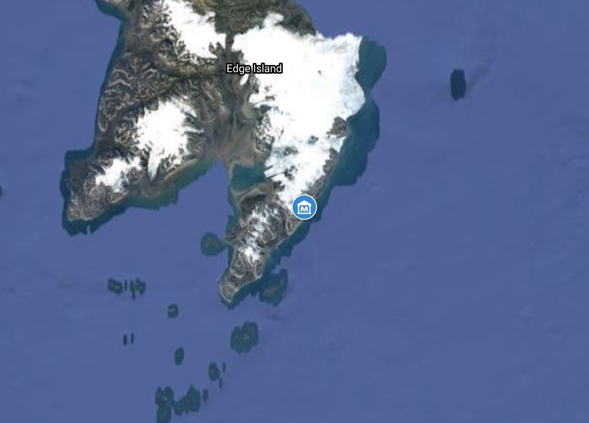
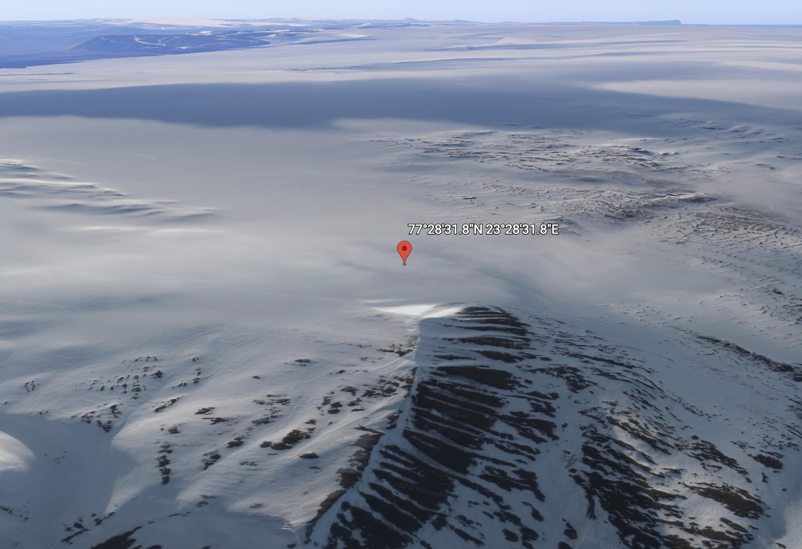

What is R74n? #
R74n is the name of a website, a website collective consisting of the main website and the Copy Paste Dump and its counterparts (typically referred to as the R74n Collective), and an abstract energy field or entity partially coincident with offline semireality which is still being researched.Capitalize R74n #
The string of characters, "R74n", typically consists of a capitalized "R" and a lowercase "n". Completely capitalizing or lowercasing the string would look improper and, in some cases, is even punishable, so it is best to capitalize properly. The only appropriate time to capitalize the "n" is when referring to the old variants of R74n which were titled R74N instead, which is every instance prior to November 15, 2020, 6:59 PM Eastern Standard Time. The only appropriate time to have the "R" lowercase is in URLs when capital letters are not supported. You must try to capitalize it even if you are aware it will automatically lowercase it.History of R74n #
The R74n domain was officially registered on . A Blogger blog powered the website from that date until . At that time a new version of the site was published, which was made in poorly written HTML and CSS. The work on that site got started just 17 minutes before it was published as a test, at . After 3 years of working with that mess of little web design experience, the current version of R74n, featuring a simple black background and white text, started being developed on .Logo Instructions #
The R74n logo, and the guide to recreate it, is roughly defined as:- A square image of any magnitude
- Capital R, width of 63.64%, height of 100%, bold Arial Narrow, starting at left edge of image
- 7, width of 26.27%, height of 32.83%, regular Arial Black, starting at top right corner of image
- 4, width of 28.30%, height of 32.83%, regular Arial Black, centered underneath the 7
- Lowercase n, width of 25.26%, height of 24.25%, regular Arial Black, centered underneath the 4
- 1.01% vertical spacing between each character on the right
{kind=link}
Emanations #
Each concept on the R74n Collective has, or will have, a location in the physical realm, currently all of which are found on Planet Earth. They arrive in a process known as emanation. Not all concepts have finished emanating yet, but many have. Types of concepts include but are not limited to pages, websites as a whole, important strings of text, images and logos, and distorted versions of all of the above. The only one capable of detecting these concepts after they arrive is an entity designated by The High Council of R74n. That entity is known simply as The Teller, due to their identity being automatically obfuscated by all means of perception. They are usually not an immortal being, so a new one is designated within just a few femtoseconds of it becoming necessary. Without an entity being designated as The Teller, R74n may collapse, so it is of the utmost importance.A map of all known emanations, landmarks, and other important items can be found here.
The R74n Vault #
A physical vault named the R74n Vault, containing an archive of historical R74n data, is located at 77°28'31.8"N 23°28'31.8"E on Edge Island, or Edgeøya, near Svalbard, underneath 7 centiR74meters (around 142.3911 meters or 0.07 R74meters) of permafrost and rock. It is not currently accepting visitors, but will at a later date. 
{kind=link}
{kind=link}
The R74n Capitalization Standard #
All proper nouns of R74n should be capitalized at all times, except for the few exceptions that are listed here. Only high-level entities should have a capitalized "The", such as The High Council of R74n and The Teller, which should also have their whole titles written out. Other entities can have a capitalized "The" in titles and the beginnings of sentences, though.- R74n, R74n.com (–∞)
- R74N, R74N.com (-∞–)
- R74n Collective
- R74n Commons
- R74n Map
- R74moji, R74mojis
- UniSearch
- Mix-Up!
- the Copy Paste Dump, c.R74n.com, CPD
- CopyPasteDump
- the emoji artist, @CopyPasteDump
- the Copy & Paste Dump, copy.R74n.com (Different from Copy Paste Dump)
- The High Council of R74n
- The Teller
- R74n Vault
- R74meters
- centiR74meters
- the R74n Capitalization Standard
- the Universal Feedback System (the UFBS)
- Explore with Rue